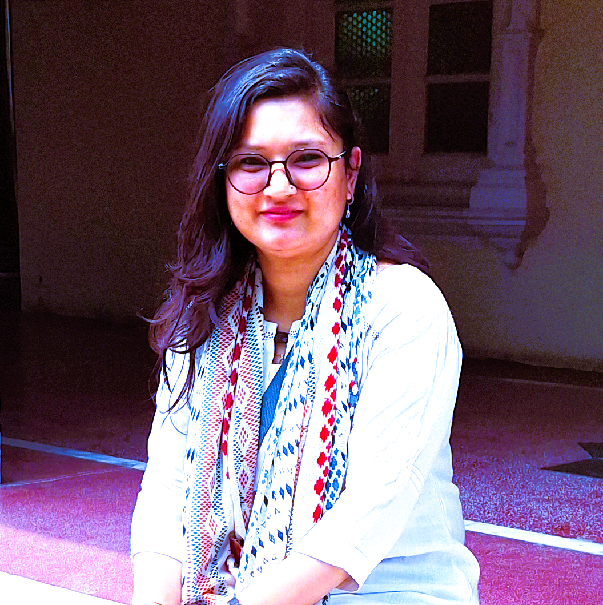

Research Associate at IIT Delhi| PhD from Department of Electrical Engineering at IIT Delhi
My research develops exact, closed-form solutions to optimal consensus problems in constrained multi-agent systems by combining optimal control with algebraic geometry. I currently work on set-membership estimation for bearings-only target motion analysis.
Paper on minimum-time consensus for damped second-order agents accepted at the 65th IEEE Conference on Decision and Control (CDC), Honolulu, Hawaii, December 2026.
Presented at the 23rd IFAC World Congress, Busan, Korea, as a PhD Forum finalist, along with an interactive session talk and poster. Supported by IFAC D&I travel support.
Completed my PhD in Electrical Engineering at IIT Delhi.
Joined the IFCPAR-funded project on bearings-only target motion analysis at IIT Delhi.
Two papers presented at the Joint IFAC Conference SSSC-TDS-COSY, Gif-sur-Yvette, France.
Hello! I'm Akansha Rautela, a Research Associate working with Prof. Indra Narayan Kar and Prof. Arpan Chattopadhyay in the Department of Electrical Engineering at IIT Delhi. I completed my PhD in the Control and Automation group under the supervision of Prof. Deepak U. Patil and Prof. Indra Narayan Kar at IIT Delhi.
My doctoral research addresses optimal consensus in multi-agent systems under input, fuel, and energy constraints. The exact minimum time to consensus and the corresponding consensus point for agents with LTI system dynamics is computed. In this work, we developed a distributed framework for computing optimal consensus when each agent has a finite fuel or energy budget. Formulated the consensus problem as a set-theoretic intersection problem over the agents' attainable sets, used Helly's theorem from convex geometry to reduce the computational complexity for large numbers of agents, and applied Gröbner basis-based elimination to obtain the solution in closed form. The result is a computationally tractable method for computing optimal trajectories of continuous-time systems under strict resource constraints.
In my current project, funded by the Indo-French Centre for the Promotion of Advanced Research (IFCPAR), I develop multi-sensor set-membership filters for bearings-only target motion analysis.Optimal Control • Multi-Agent Systems • Distributed Control • Gröbner Basis Methods
Papers at IEEE CDC, IFAC World Congress, and MTNS; journal paper under review at IEEE TAC. Reviewer for IEEE TAC, IEEE TAES, IEEE CDC, and IFAC conferences.
Minimum-time and minimum-fuel consensus for agents with bounded inputs and fuel or energy budgets. Using attainable sets, Helly's theorem, and Gröbner-basis elimination, I obtain the optimal consensus time and point in closed form for double-integrator, damped second-order, and general LTI agents.
State estimation for bearings-only TMA using ellipsoidal set-membership filters, multi-sensor fusion, and SDP-based updates.
Extending the attainable-set framework to formation consensus in vehicle platoons with acceleration, velocity, energy, and inter-vehicle safety constraints.
IEEE Transactions on Automatic Control, 2026 (3rd revision)
Under Review65th IEEE Conference on Decision and Control (CDC), 2026 (Accepted)
AcceptedPresented at the 23rd IFAC World Congress, Busan, Republic of Korea, August 2026
AcceptedJoint IFAC Conference SSSC-TDS-COSY, Gif-sur-Yvette, France, July 2025
DOIJoint IFAC Conference SSSC-TDS-COSY, Gif-sur-Yvette, France, July 2025 (Extended Abstract)
PDF26th International Symposium on Mathematical Theory of Networks and Systems (MTNS), University of Cambridge, UK, August 2024 (Extended Abstract)
PDF ProceedingsInternational Conference on Sustainable Communication Networks and Application, Springer, 2019
DOI"Minimum time consensus for damped second order agents using Gröbner basis" (upcoming)
PhD Forum oral presentation on doctoral research (finalist)
Interactive session (shotgun talk and poster): "Minimum Time Consensus of Multi-agent System under Energy Constraints"
"Minimum Fuel Consensus for Multi-agent System"
"Minimum Time Consensus for a Class of Second Order LTI Systems Under Fuel Constraints"
"Minimum Time Consensus of Multi-agent System under Fuel Constraints"
Indian Institute of Technology Delhi, New Delhi
September 2020 - July 2026
Thesis submitted: April 2026 | Defended: July 2026
Thesis: Computation of Optimal Consensus in Multi-Agent Systems Using Gröbner Basis
Advisors: Prof. Deepak U. Patil and Prof. Indra Narayan Kar
National Institute of Technology Kurukshetra, Haryana
July 2019
Thesis: Line of Sight (LOS) Stabilization using Disturbance Observer (DOB)
Scholarship: MoE GATE Scholarship
College of Engineering Roorkee, Roorkee
May 2015
Indian Institute of Technology Delhi, New Delhi
PIs: Prof. Indra Narayan Kar and Prof. Arpan Chattopadhyay
Project: Improved Bearings-only Target Motion Analysis (BO-TMA) Using AI Tools (IFCPAR funded)
Developing multi-sensor set-membership filters that fuse bearing and Doppler measurements into guaranteed ellipsoidal bounds on target state, using SDP/S-procedure-based updates, and investigating observer maneuvers that improve estimation.
Indian Institute of Technology Delhi, New Delhi
Supported undergraduate and postgraduate courses over 10 semesters:
• ELL333: Multivariable Control
• ELL705: Stochastic Filtering and Identification
• ELL225 & ELP225: Control Engineering (Theory & Lab)
• ELP101: Introduction to Electrical Engineering Lab
Conducted tutorials and laboratory sessions, designed and evaluated assignments and examinations, and provided academic support to students.
Teaching Interests: Control Systems, Linear Systems Theory, Optimal Control Theory, Multivariable Control, Stochastic Estimation and Filtering, and a PG elective on Multi-Agent Systems.
Defence Research and Development Organisation (IRDE), Dehradun
Designed and simulated a Disturbance Observer (DOB) in MATLAB/Simulink for Line of Sight (LOS) stabilization under external disturbances. Contributed to research on robust control strategies for defense applications.
23rd IFAC World Congress, Busan, Korea (August 2026)
Finalist - 23rd IFAC World Congress 2026
Selected for World Congress 2026
For M.Tech at NIT Kurukshetra
Ministry of Education Scholarship for PhD at IIT Delhi
I'm always interested in discussing research opportunities, collaborations, and new ideas in control systems and multi-agent systems.